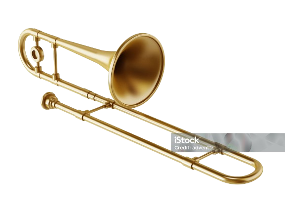

The trombone is a brass wind musical instrument known for its distinctive slide mechanism used to change pitch. Slide Mechanism: Unlike other brass instruments that use valves, the trombone uses a telescoping slide to alter the length of the tubing, and thus the pitch. The slide has seven primary positions. Sound Production: Sound is created by the player's lip vibration against a cup mouthpiece, which causes the air column within the instrument to vibrate. Pitch Control: The player adjusts the pitch by vibrating their lips (embouchure) and by changing the length of the tubing via the slide. History: The trombone originated in the 15th century as an evolution of the trumpet and was initially called the "sackbut". It was commonly used in church music and royal ceremonies. Its inclusion in secular symphonies, notably by Beethoven, led to its rise in popularity and its role in modern orchestras and other ensembles. Mouthpiece: Where the player's lips vibrate to create sound. Slide: The extendable mechanism that changes the length of the tubing and alters the pitch. Bell: The flared end of the instrument where the sound exits and is amplified. Tuning Slide: Used for making fine adjustments to the instrument's overall pitch. Water Key (Spit Valve): Releases condensation that accumulates in the tubing. Tenor Trombone: The most common type, typically in Bb tuning. It may be "straight" (no additional tubing) or have an F-attachment (with a trigger to engage extra tubing). Bass Trombone: Similar to the tenor trombone in length and tuning, but with a wider bore (inner tubing diameter) and bell for a lower, mellower sound. It usually has one or two valves (triggers) to expand its lower range. Alto Trombone: A smaller, higher-pitched trombone, typically in Eb or F. Contrabass Trombone: A larger, heavier instrument than the bass trombone, used for even lower notes, according to Houghton Horns. Valve Trombone: Uses valves instead of a slide to change pitch. In Summary: The trombone is a versatile brass instrument distinguished by its slide, capable of producing a wide range of notes and sounds, and used in various musical genres from classical to jazz.
